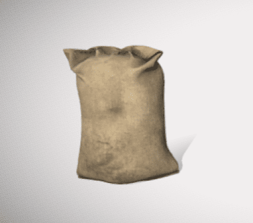
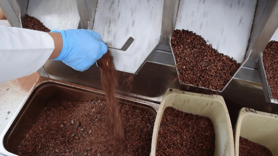

Después del secado, los granos de cacao se empaquetan en sacos de
yute o polipropileno, que permiten la ventilación y evitan la
acumulación de humedad. Este proceso es clave para proteger la
calidad del cacao durante el almacenamiento y transporte. Además,
los sacos se etiquetan con información como el origen, el lote y
la certificación de calidad, asegurando la trazabilidad del
producto.
Empaquetado

Al llegar a la fábrica, el cacao pasa por un riguroso proceso de
inspección para garantizar su calidad y cumplimiento con los
estándares industriales. Se toman muestras de los sacos para
analizar características como la humedad, el tamaño de los granos
y la ausencia de contaminantes. Si el lote cumple con los
requisitos, se procede a la limpieza y tostado; de lo contrario,
puede ser rechazado o sometido a tratamientos adicionales antes de
su procesamiento.
Comprobación en la fábrica
 Los sacos de cacao se trasladan desde los centros de acopio hasta
las fábricas procesadoras mediante camiones, barcos o trenes,
dependiendo de la distancia y la infraestructura disponible.
Durante el transporte, es fundamental controlar la temperatura y
la humedad para evitar el crecimiento de hongos o la fermentación
no deseada. En rutas internacionales, el cacao suele exportarse en
contenedores sellados y sometidos a inspecciones de calidad.
Transporte
Los sacos de cacao se trasladan desde los centros de acopio hasta
las fábricas procesadoras mediante camiones, barcos o trenes,
dependiendo de la distancia y la infraestructura disponible.
Durante el transporte, es fundamental controlar la temperatura y
la humedad para evitar el crecimiento de hongos o la fermentación
no deseada. En rutas internacionales, el cacao suele exportarse en
contenedores sellados y sometidos a inspecciones de calidad.
Transporte
Módulos


